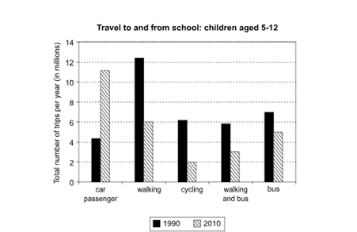
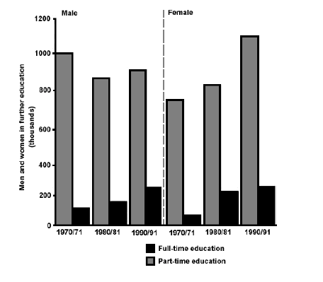
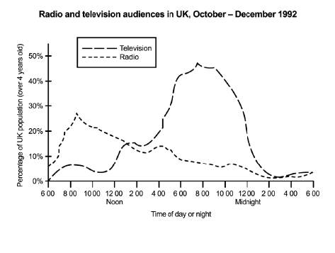
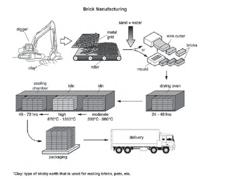

Academic Writing Task 1: Transport
The chart below shows the number of trips made by children in one country in 1990 and 2010 to travel to and from school using different modes of transport.
Summarise the information by selecting and reporting the main features, and make comparisons where relevant.

Academic Writing Task 1: Education
The chart below shows the number of men and women in further education in Britain in three periods and whether they were studying full-time or part-time.
Summarise the information by selecting and reporting the main features, and make comparisons where relevant.

Academic Writing Task 1: Media
The graph below shows radio and television audiences throughout the day in 1992.
Summarise the information by selecting and reporting the main features, and make comparisons where relevant.

Academic Writing Task 1: Bricks Manufacturing
The diagram below shows the process by which bricks are manufactured for the building industry.
Summarise the information by selecting and reporting the main features, and make comparisons where relevant.

Academic Writing Task 2: Wealth & Upbringing
Write about the following topic:
Children who are brought up in families that do not have large amounts of money are better prepared to deal with the problems of adult life than children brought up by wealthy parents.
To what extent do you agree or disagree with this opinion?
Give reasons for your answer and include any relevant examples from your own knowledge or experience.
Academic Writing Task 2: International Tourism
Write about the following topic:
International tourism has brought enormous benefit to many places. At the same time, there is concern about its impact on local inhabitants and the environment.
Do the disadvantages of international tourism outweigh the advantages?
Give reasons for your answer and include any relevant examples from your own knowledge or experience.
IELTS Writing Assessment Criteria (Band Descriptors)
| Band | Task Achievement | Coherence & Cohesion | Lexical Resource | Grammatical Range & Accuracy |
|---|---|---|---|---|
| 9 | All requirements of the task are fully and appropriately satisfied. Lapses in content are extremely rare. | Message followed effortlessly. Cohesion used in a way that very rarely attracts attention. Paragraphing skilfully managed. | Full flexibility and precise use. Wide range of vocabulary used accurately and appropriately with sophisticated control. | Wide range of structures used with full flexibility and control. Punctuation and grammar used appropriately throughout. |
| 8 | Covers all requirements appropriately and sufficiently. Key features selected and clearly highlighted. | Message followed with ease. Information and ideas logically sequenced. Paragraphing used appropriately. | Wide resource fluently and flexibly used to convey precise meanings. Skilful use of uncommon/idiomatic items. | Wide range of structures flexibly and accurately used. Majority of sentences are error-free. |
| 7 | Covers requirements of task. Clear overview presented with key features covered and highlighted. | Information and ideas logically organised with clear progression throughout. Range of cohesive devices used. | Resource sufficient for flexibility and precision. Uses less common items with awareness of style and collocation. | Variety of complex structures used with flexibility and accuracy. Error-free sentences are frequent. |
| 6 | Focuses on task requirements. Relevant overview attempted. Key features adequately highlighted. | Arranged coherently with clear overall progression. Cohesive devices used effectively despite some faults. | Generally adequate and appropriate for the task. Meaning clear despite restricted range or precision. | Mix of simple and complex sentence forms used. Errors in grammar/punctuation rarely impede communication. |
| 5 | Addresses task generally. Key features not adequately covered; recounting of detail mainly mechanical. | Organisation evident but not wholly logical. Limited/overuse of cohesive devices with some inaccuracy. | Resource limited but minimally adequate. Simple vocabulary used accurately; frequent lapses in word choice. | Range of structures limited and repetitive. Complex sentences tend to be faulty. Frequent errors. |
| 4 | Attempt to address task. Few key features selected. Relationships between ideas unclear. | Information evident but not arranged coherently; no clear progression. Basic cohesive devices used. | Limited and inadequate resource. Vocabulary basic and repetitive. Errors in spelling impede meaning. | Very limited range of structures. Subordinate clauses rare. Grammatical errors frequent and impede meaning. |
| Band | Task Response | Coherence & Cohesion | Lexical Resource | Grammatical Range & Accuracy |
|---|---|---|---|---|
| 9 | Prompt appropriately addressed and explored in depth. Clear, fully developed position with well-supported ideas. | Message followed effortlessly. Cohesion attracts no attention. Paragraphing skilfully managed. | Full flexibility and precise use. Natural and sophisticated control of lexical features. Errors extremely rare. | Wide range of structures with full flexibility and control. Punctuation and grammar used appropriately throughout. |
| 8 | Prompt appropriately and sufficiently addressed. Clear, well-developed position with relevant, supported ideas. | Message followed with ease. Information and ideas logically sequenced. Cohesion well managed. | Wide resource fluently and flexibly used. Skilful use of uncommon and idiomatic vocabulary. | Wide range of structures flexibly and accurately used. Majority of sentences are error-free. |
| 7 | Main parts of prompt addressed. Clear developed position presented. Main ideas extended and supported. | Logically organised with clear progression throughout. Range of cohesive devices used flexibly. | Sufficient resource for flexibility and precision. Uses less common items; awareness of style and collocation. | Variety of complex structures used with flexibility and accuracy. Error-free sentences frequent. |
| 6 | Main parts of prompt addressed. Position presented is directly relevant. Main ideas relevant but may lack clarity. | Information arranged coherently with clear overall progression. Cohesive devices used to good effect. | Generally adequate and appropriate. Meaning generally clear despite restricted range or precision. | Mix of simple and complex sentence forms used. Errors in grammar/punctuation rarely impede communication. |
| 5 | Main parts incompletely addressed. Position development not always clear. Main ideas limited/repetitive. | Organisation evident but not wholly logical. Relationship between ideas can be followed but sentences not fluently linked. | Resource limited but minimally adequate. Simple vocabulary used accurately; frequent lapses in word choice. | Limited and repetitive range of structures. Complex sentences tend to be faulty. Frequent grammatical errors. |
| 4 | Prompt tackled in a minimal way or answer tangential. Main ideas difficult to identify. | Information evident but not arranged coherently. No clear progression. Inaccurate/repetitive cohesive devices. | Resource limited and inadequate. Vocabulary basic. Inappropriate word choice and spelling errors impede meaning. | Very limited range of structures. Subordinate clauses rare. Grammatical errors frequent and impede meaning. |